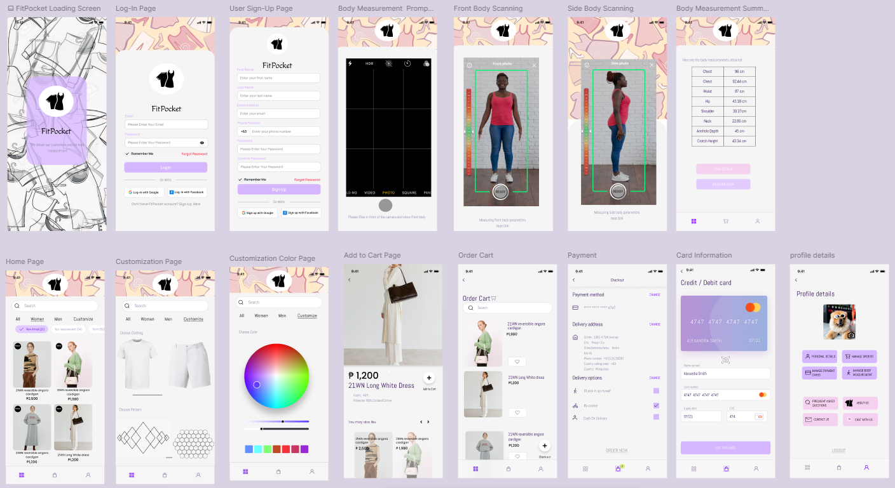

Download CV
Contact
As a Computer Engineering Student, I have developed experience in both hardware and software systems, focusing on designing, analyzing, and implementing computing solutions. With hands-on experience from various projects, I am eager to apply my skills in a professional setting and continue advancing my knowledge.
I have hands-on experience with Arduino Uno, ESP32, and ESP8266, utilizing various libraries to implement technical concepts learned in embedded systems. My work includes integrating a wide range of components such as sensors, servo motors, LEDs, buzzers, relays, and displays in real-time embedded systems and IoT applications. This experience has strengthened my understanding of microcontroller programming and the development of responsive, connected devices.
I have experience in AI through my thesis study focused on bamboo growth habits, utilizing image processing techniques for identification. I employed the YOLO algorithm on a Raspberry Pi to analyze and recognize patterns, enhancing my understanding of machine learning and its applications in environmental studies.
I have gained extensive knowledge in Cisco networking, learning to configure routers, manage servers, and encrypt passwords, among other topics. Additionally, I have experience working with AWS cloud infrastructure, focusing on backend development for various projects. This combination of skills has enhanced my understanding of network management and cloud computing.

• Demonstrates a Smart Bicycle distance alert system for cyclist safety.
• Addresses the need for cyclist protection using ultrasonic sensors, LED
indicators, a microcontroller Arduino Uno, LCD display, and a buzzer.
• Alerts cyclists about approaching vehicles from behind with a multi-faceted warning system.
• Incorporates a manual turning signal system for enhanced situational
awareness.
• Features three buttons for signaling: left, right, and off.
- Pressing left or right triggers corresponding blinking yellow LEDs to
indicate direction.
- The middle button turns off the signal.
• LCD display shows safety recommendations and messages to the
cyclist.

• Develop a device to distinguish between running and clumping bamboo growth habits using image data
• Utilize the YOLOv5 algorithm to automatically detect and classify bamboo growth habits patterns, allowing for
efficient processing of image-based datasets
• Analyzed the performance of the created model using a confusion matrix
• Evaluate the practical applicability of the device and algorithm in real-world bamboo habitats

Designed and implemented a user-friendly interface for an
application, integrating essential features such as a Welcome
Page, Sign-Up/Log-In Page, Search Bar, Notification Tool,
Payment Page, Delivery Page, Menu Bar, Settings, and more.
The interface focuses on intuitive navigation and accessibility
to enhance the overall user experience while maintaining
functionality and aesthetic appeal.